Triangulations | |
| Prev | Next |
Table of Contents
- Creation
- Analysis
- Identifying the Manifold (2-D and 3-D)
- Validity, Orientability and Other Basic Properties (All Dimensions)
- Viewing Facet Gluings (All Dimensions)
- Skeletal Information (All Dimensions)
- Algebraic Invariants (3-D and 4-D)
- Combinatorial Composition (3-D and 4-D)
- High-Level Recognition Routines (3-D)
- SnapPea Calculations (3-D)
- Decomposition (All Dimensions)
- Triangulating Vertex Links (3-D and 4-D)
- Triangulating Boundary Components (3-D and 4-D)
- Modification
- Editing Gluings (All Dimensions)
- Automatic Simplification (3-D and 4-D)
- Manual Simplification: Elementary Moves (3-D and 4-D)
- 0-Efficiency (3-D)
- Switching Between Real and Ideal (3-D and 4-D)
- Subdivision (All Dimensions)
- Orienting Triangulations and Double Covers (All Dimensions)
- Puncturing and Drilling (3-D)
- Building Connected Sums (3-D)
- Cutting Along and Crushing Normal Surfaces (3-D)
Manifolds in Regina are typically represented by
triangulations.
A d-manifold triangulation consists of a
set of d-simplices along with instructions on
how some or all of their (d-1)-dimensional
facets should be glued together in pairs.
Most triangulations in Regina represent 2-, 3- and 4-manifolds.
We refer to their d-simplices as triangles,
tetrahedra and pentachora
respectively.
Regina works with generalised triangulations,
which are less strict than simplicial complexes.
This means that you may glue two facets of the same d-simplex together,
or you may glue facets so that different vertices of the same d-simplex
become identified (and likewise for edges and so on).
Indeed, the best triangulations for computation are often
one-vertex triangulations, where all vertices of
all simplices become identified together.
The downside of this flexibility is that, if you are not careful,
your triangulation might not represent a d-manifold at all.
This is only a problem for dimensions
d ≥ 3,
and if it happens in dimensions
d = 3 or 4 then Regina will
tell you about it when you view
the triangulation.
Regina offers rich support for triangulations of dimensions 2, 3 and 4.
It also offers more basic support for triangulations of
dimensions 5 ≤ d ≤ 8,
and if you make your own
custom
build,
dimensions 9 ≤ d ≤ 15.
These higher dimensions (≥ 5) are not supported in the GUI;
instead you will
need to use either Python scripting
or C++ programming.
Warning
If you have data files that contain triangulations of dimensions 9–15, do not open and save them again using one of Regina's ready-made packages. These packages do not understand dimensions 9–15 at all, and so any triangulations in dimensions 9—15 will be lost.
The decision to drop dimensions 9–15 from the default builds was
for performance—they were causing significant overhead for Python in
particular. If you need these higher dimensions, you can build
Regina yourself with the
HIGHDIM
flag;
also please drop Ben an email so he knows that there is some demand for these
features.
The remainder of this chapter talks through triangulations of dimensions 2, 3 and 4 only.
Tip
If you are more familiar with SnapPea / SnapPy, you should be aware that Regina and SnapPy are different programs with different aims, and (importantly) with different underlying data structures. SnapPy stores information with 3-manifold triangulations that Regina does not (such as fillings and peripiheral curves on cusps, which often do not make sense in Regina's more general setting).
If you wish to work with a file from SnapPea or SnapPy and you need to preserve SnapPy's extra information (such as fillings and peripheral curves), you should work with a SnapPea triangulation instead. The trade-off is that, while you will still have access to much of Regina's functionality, you will lose some of Regina's fine-grained control over the triangulation (in particular, the ability to modify it). See the chapter on SnapPea triangulations for details.
The simplest way to create a triangulation is through the various → menu items (or the corresponding toolbar buttons), which will create a new triangulation of the given dimension from scratch.
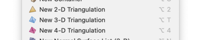
You will be asked what type of triangulation to create (see the drop-down box below). Here we walk through the various options.
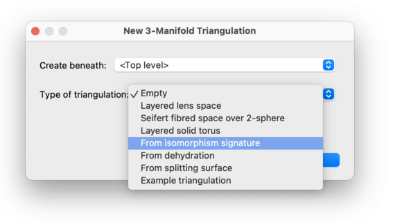
This will create a new triangulation with no simplices at all. This is best if you wish to enter a triangulation by hand: first create an empty triangulation, and then manually add simplices and edit the facet gluings.
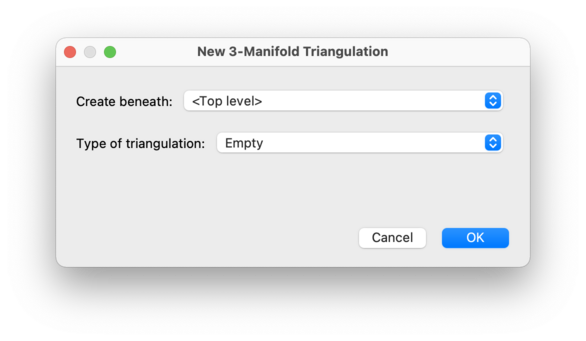
Regina offers a selection of ready-made sample triangulations, which you can play with to discover how Regina works. These include examples of knot complements and 2-knot complements, well-known spaces such as the Poincaré homology sphere and the Weber-Seifert dodecahedral space, and many others. Simply select an example from the list provided and Regina will build the corresponding triangulation for you.
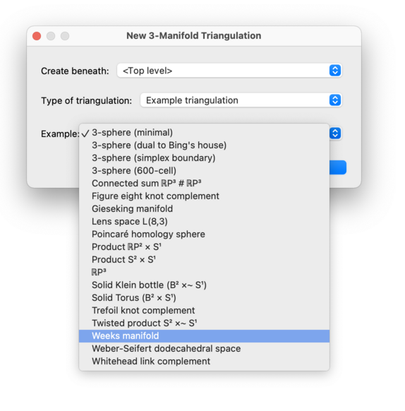
This will reconstruct a triangulation from an isomorphism signature.
An isomorphism signature is a compact sequence
of letters, digits and/or punctuation that identifies a
triangulation uniquely up to combinatorial isomorphism (i.e.,
relabelling simplices and their vertices). An example for 3-manifolds is
cPcbbbiht (which describes the figure eight knot
complement).
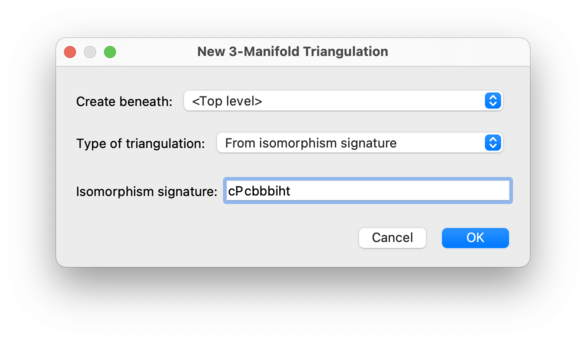
Stated precisely: every triangulation has a unique isomorphism signature, and two triangulations have the same signature if and only if they are isomorphic. Isomorphism signatures are introduced in the paper [Bur11b]. They are available in all of the dimensions that Regina supports, and for 3-manifolds the format is explicitly described in [Bur11c].
If you already have a triangulation and you wish to view its isomorphism signature: for 3-manifolds you can view it through the triangulation composition tab, and in other dimensions you can access it through Python scripting or C++ programming.
Caution
Isomorphism signatures are case sensitive! Be sure that you are entering upper-case and lower-case correctly (or better, copy and paste the signature using the clipboard if you can).
For 2-manifolds, Regina can triangulate a connected surface of any topological type. Select either Orientable surface or Non-orientable surface as the type of triangulation, and then enter the genus and the number of punctures that you would like in the surface.
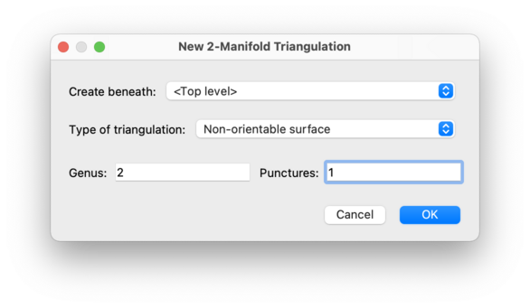
For orientable surfaces the genus represents the number of handles (e.g., the torus has orientable genus 1), and for non-orientable surfaces the genus represents the number of crosscaps (e.g., the Klein bottle has non-orientable genus 2).
This will create a layered lens space with the given parameters. This involves building two layered solid tori and gluing them together along their torus boundaries. Layered lens spaces were introduced by Jaco and Rubinstein [JR03], [JR06] and others.
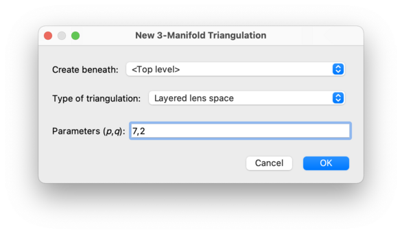
The parameters
(p, q)
must be non-negative and coprime, and must satisfy
p>q
(although the exceptional case (0, 1) is also allowed).
The resulting 3-manifold will be the lens space
L(p,q).
Tip
You do not need to separate the lens space parameters with commas: any punctuation, or even just spaces, will suffice.
This will create an orientable Seifert fibred space over the 2-sphere with any number of exceptional fibres. Regina will choose the simplest construction that it can based upon the given parameters.
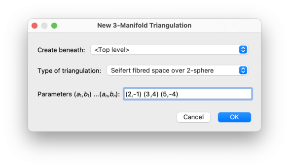
The parameters for the Seifert fibred space must be given as a sequence of pairs of
integers (a1,b1) (a2,b2) ... (a,nb), where each pair
(na,ib) describes a single exceptional fibre.
An example is (2,-1) (3,4) (5,-4), which represents the
Poincaré homology sphere.
The two integers in each pair must be
relatively prime, and none of ia1, a2, ..., a may be zero.
n
Each pair (a,ib)
does not need to be normalised; that is, the parameters may be positive or
negative, and ib may lie outside the range [0,ia).
There is no separate twisting
parameter; each additional twist can be incorporated into the existing
parameters by replacing some pair
(ia,ib) with (ia,ia+ib).
Pairs of the form (1,ik) and even
(1,0) are acceptable.
Tip
You do not need to separate the Seifert fibred space parameters with brackets and commas: any punctuation, or even just spaces, will suffice.
This will create a layered solid torus with the given parameters. This is a solid torus built from a two-triangle Möbius band by repeatedly adding new layers of tetrahedra onto the boundary. Layered solid tori were introduced by Jaco and Rubinstein [JR03], [JR06] and others.
The three parameters
(a, b,
c) must be non-negative and coprime,
and one must be the sum of the other two. These parameters
describe how many times the meridional disc of the solid torus
intersects the three edges on the boundary of the triangulation.
Tip
You do not need to separate the layered solid torus parameters with commas: any punctuation, or even just spaces, will suffice.
This will create an orientable handlebody of the given genus. This is built by layering tetrahedra onto an appropriate one-vertex once-punctured non-orientable surface (thus generalisating the layered solid torus construction, which essentially layers tetrahedra onto a one-vertex Möbius band).
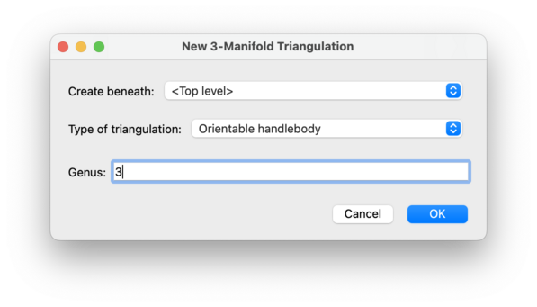
The genus may be any non-negative integer.
This will rehydrate a 3-manifold triangulation from the given
dehydration string.
A dehydration string is a sequence of letters
that contains enough information to reconstruct a triangulation
(though tetrahedra and their vertices might be relabelled).
An example is dadbcccaqhx
(which describes the SnapPea census triangulation
m025).
Dehydration strings appear in
census papers such as the hyperbolic cusped census of
Callahan, Hildebrand and Weeks [CHW99],
in which the dehydration format is explicitly described.
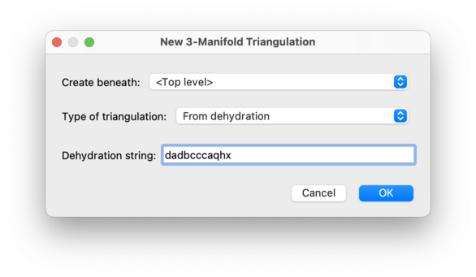
Only some 3-manifold triangulations have dehydration strings.
The dehydration string (if it exists) for an existing triangulation
can be accessed through Python scripting
by calling Triangulation3.dehydrate().
This will reconstruct a 3-manifold triangulation from a splitting surface signature. A splitting surface is a compact normal surface consisting of precisely one quadrilateral per tetrahedron and no other normal discs. A splitting surface signature is a string of letters arranged into cycles that describe how these quadrilaterals are joined together. From this signature, both the normal surface and the enclosing triangulation can be reconstructed.
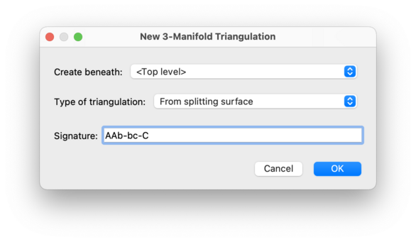
When entering a splitting surface signature, you may use
any block of punctuation to separate cycles of letters. All
whitespace will be ignored. Examples of valid signatures
are (ab)(bC)(Ca) and AAb-bc-C.
The precise format of splitting surface signatures is described in [Bur03].
This allows you to build an I-bundle or an S1-bundle over an existing 3-manifold triangulation.
Choose either I-bundle or
S1-bundle
as the triangulation type, and then select your 3-manifold
triangulation in the drop-down box. If your triangulation
represents the 3-manifold M, then
Regina will build the 4-manifold
M × I or
M × S1 respectively.
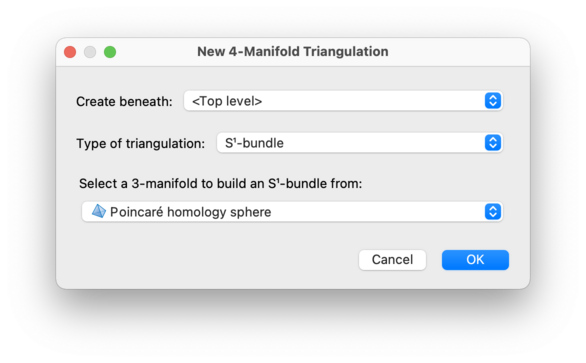
Tip
Regina is also able to build non-trivial bundles, formed by
gluing the two boundaries of
M × I according to a
given monodromy. However, this construction is only accessible through
Python scripting
or C++ programming.
You can import triangulations into Regina from other programs, such as SnapPea / SnapPy or Orb. This is done through the → menu. For details, see the chapter on importing and exporting data.
Regina can build a census of all triangulations satisfying a variety of different constraints. The best way to do this is through the command-line tool tricensus.
| Prev | Contents | Next |
| General Operations on Packets | Up | Analysis |